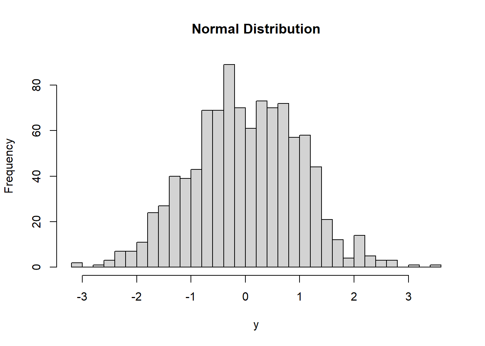
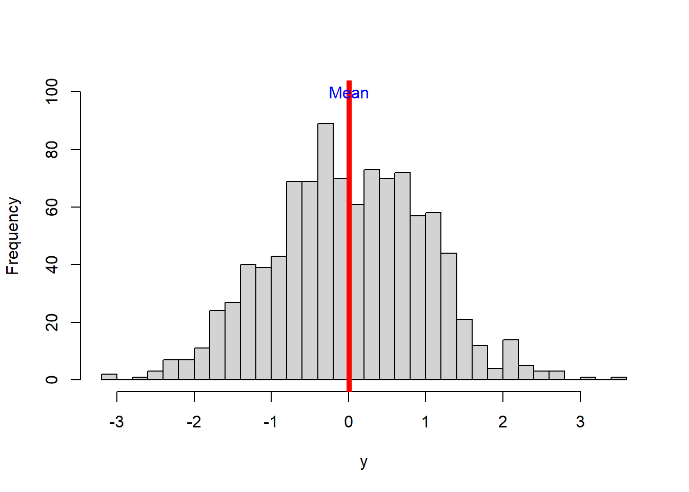
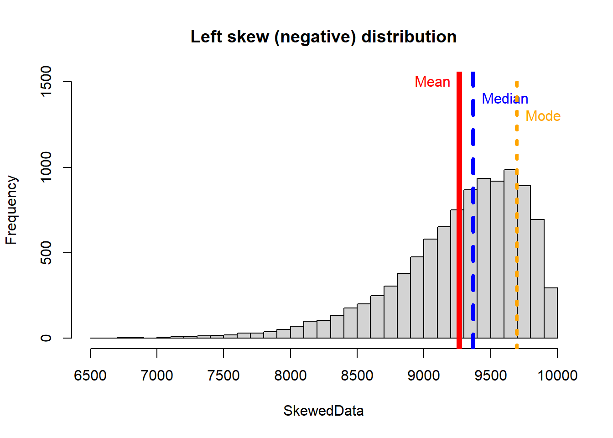
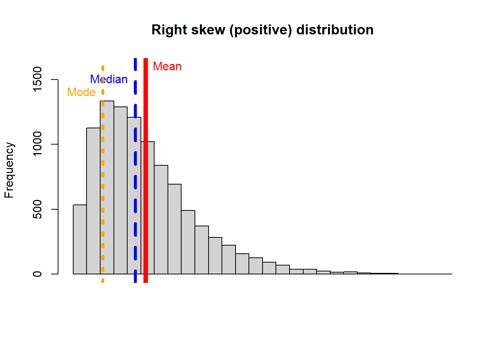
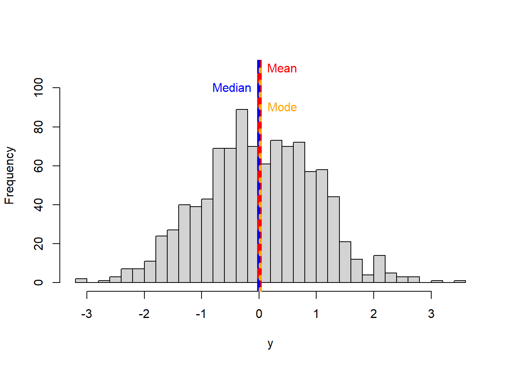

Central tendency
Central tendency refers to metrics that attempt to describe what is in the middle of your data. The main metrics of central tendency are the mean (also called average), the median, and the mode.

Figure 5.1: Measures of central tendency
l
Let’s create some dummy data to see what these metrics are intended to show, how to interpret them and when to use them.
set.seed (10)
y <- rnorm(1000) # the function rnorm allows you to create a random set of numbers from a normal distribution
#lets now plot that data using the hist function, you already know how to use:
hist(y, main = "Normal Distribution",breaks = 30)
The arithmetic mean
The arithmetic mean is the average of the numbers. It is easy to calculate: add up all the numbers, then divide by how many numbers there are.
Mathematically, it is expressed as:
\[\begin{equation} \bar{X} = \frac{\sum_{i=1}^n X_i}{n} \end{equation}\]
The mean of a sample is denoted wit the letter \(\bar{X}\); at times it does not include the horizontal bar above the letter.
The mean of a population is at times denoted with the lowercase letter \(u\), at times it is not cursive. They are both calculated the same way.The symbol that looks like a pacman, \(\sum_{}\), is call summation. The lower letter \(i\) indicates that the summation starts from the first number (i.e., i=1), and the higher letter n, means the last number. \(Xi\) means each value. In short, the numerator of the equation above says: sum all values starting from the first one until the last one. \(n\) indicates the sample size or total number of values in your database (if it is was the average of a population, you will likely see capital letter \(N\) instead of the lowercase \(n\) ).

Figure 5.2: The stupid mean
y
In R, the mean is calculated with the function mean.
MEAN=mean (y, na.rm = FALSE) #here I calculate the mean, and assign it to a variable.
MEAN #to display the variable, simply type it, and click enter## [1] 0.01137474You may have noted that I added ‘na.rm = TRUE’ in the mean function. This command is used as a caution to calculate the mean even if you have empty values. Lets check,
VectorMissingAValue <- c(12,7,3,4.2,18,2,54,-21,8,-5,NA)#here I created a vector of values, incluidng a missing value NA (NA in R stands for Not Available)
mean (VectorMissingAValue) #If I calculate the mean of a vector with missing values I get## [1] NANow, if you include the command ‘na.rm = TRUE’, that will re-do the calculation excluding any missing value.
mean (VectorMissingAValue,na.rm = TRUE) ## [1] 8.22Alright, lets keep going. You can visualize the mean in the histogram using the function abline, and put a name using the text function, like this:
hist(y, main = NULL,breaks = 30, ylim=c(0,100),)
abline(v=MEAN, col="red",lwd=5) #abline put a line in a figure...you use v for vertical and h for horizontal, the value that proceeds is where the line will be drawn.
text("Mean",x=MEAN,y=100, col="blue") #the text function places a label on your figure at the given x and y position you like...there are several other parameters you can control. You can also use the function *legend*, which allows you more controls, including background colors.
The trimmed mean
There are several variations to calculate the mean, for instance the trimmed mean. One of the problems with the arithmetic mean is that it can be strongly impacted by extreme values. In those cases, it is recommend to trim the extremes and calculate the mean on the resulting values.
Commonly, a %5 trimmed mean should satisfy. As its name indicates, you remove the top and bottom 5% of the data, and calculate the mean on those values.
Lets try a simple example. Say you measured the time it took 20 students to run 100m.
The individual values in seconds were 10, 20, 23, 23, 22, 20, 25, 22, 20, 25, 22, 20, 25, 20, 21, 21, 23, 21, 24, and 120.
To calculate this in R, I put all values in a vector and calculate the mean,
vals=c(10,20,23,23,22,20,25,22,20,25,22,20,25,20,21,21,23,21,24,120)
mean(vals)## [1] 26.35But from the data, you can tell that one student was very fast (only took 10 secs) and another one was very slow (he took 120secs). Lets try a 5% trimmed mean,
First, you sort the data from smallest to largest,
10,20,20,20,20,20,21,21,21,22,22,22,23,23,23,24,25,25,25,120
Now you remove the first and last (i.e, 5% of 20 is 1, so you delete the bottom and top one records, red numbers in the array).
Now calculate the mean of the resulting data or the so-call 5% trimmed mean:
Trimmedvals=c(20,23,23,22,20,25,22,20,25,22,20,25,20,21,21,23,21,24)
mean(Trimmedvals)## [1] 22.05556The 5% trimmed mean is 22.06 compared to the arithmetic mean 26.35.
The weighted average
Sometimes we wish to average numbers, but we want to assign more importance, or weight, to some of the numbers. For that we used the weighted average, which is calculated as:
\[\begin{equation} Weighted \ average= \frac{\sum_{i=1}^n (X_i * w)}{\sum_{i=1}^n w} \end{equation}\]
where \(Xi\) is a data value and w is the weight assigned to that data value.
Lets try an example.
Suppose your professor tells you that your grade will be based on a midterm and a final exam, each of which is based on 100 possible points. However, the final exam will be worth 60% of the grade and the midterm only 40%. How could you determine an average score that would reflect these different weights? The average you need is the weighted average.
If you scored 83 in your midterm and 95 in your final, what will be your final grade?.
\[\begin{equation} Weighted \ average= \frac{(83*40)+(95*60)}{(40+60)} \end{equation}\]
So your final grade will be 90.2. Your average is high enough to earn an A, which I hope you all get in my class!. And if you have been paying attention, here are two tokens: jj
The median
The median (also referred to as the 50th percentile) is the middle value in a sample of ordered values. Half the values are above the median and half are below the median.
To calculate the median, you start by sorting all values from lowest to highest, the median is the value in the middle.
When your set of numbers is odd, the median is the single value in the middle of the sorted list. Below is a vector of values indicating the price of different candy.

Figure 5.3: Median calculation for odd number of values
When your set of numbers is even, you have a problem because there will be two numbers right in the middle of the sorted vector. In this case you report the arithmetic mean of the two values in the middle.

Figure 5.4: Median calculation for even number of values
y
In R, the median is calculated with the function median.
MEDIAN=median (y) #here I calculate the mean, and assign it to a variable.
MEDIAN #to display the variable, simply type it, and click enter## [1] -0.003001333p
Let’s plot the median with the mean value to the histogram we were doing before.
hist(y, main = NULL,breaks = 30, ylim=c(0,110),)
#lets plot the mean
MEAN=mean(y)
abline(v=MEAN, col="red",lwd=5)
text("Mean",x=MEAN,y=110, col="red",pos=4) #pos=4 means, to place the text to the right of the coordinates xy.
# now the median
abline(v=MEDIAN, col="blue",lwd=3, lty=2) #I plot the median in blue to distinguish from the mean
text("Median",x=MEDIAN,y=100, col="blue", pos=2) 
The mode
The mode is simply the most common value in all of your data.
R does not have a standard in-built function to calculate mode. So we create a user function to calculate the mode of a dataset. This function takes a vector as input and gives the mode value as output.
getmode <- function(v) { # the function will take a vector of values
uniqv <- unique(v) #select all the unique values in the vector
uniqv[which.max(tabulate(match(v, uniqv)))] #stimate the number of times each value appears and return the largest
}Now let’s use our new function
MODE=getmode(y) #here I calculate the mode, and assign it to a variable.
MODE #to display the variable, simply type it, and click enter## [1] 0.01874617Unlike the mean and the median, the mode can also be used with character data (i.e., words). For instance, you want to know what is the most common name in the USA?. For that you can use the mode.
# Create the vector with characters.
NAMES <- c("Peter", "Carl", "Darrell", "John", "Peter")
getmode(NAMES) #here I calculate the mode, and assign it to a variable.## [1] "Peter"Let’s plot our mode in the histogram with the mean and the median we were working on before.
hist(y, main = NULL,breaks = 30, ylim=c(0,110),)
#lets plot the mean
abline(v=MEAN, col="red",lwd=6)
text("Mean",x=MEAN,y=110, col="red",pos=4)
# now the median
abline(v=MEDIAN, col="blue",lwd=4, lty=2) #I plot the median in blue to distinguish from the mean
text("Median",x=MEDIAN,y=100, col="blue", pos=2)
#now let's plot the mode
MODE=getmode(y)
abline(v=MODE, col="orange",lwd=4, lty=3) #I plot the median in blue to distinguish from the mean
text("Mode",x=MODE,y=90, col="orange", pos=4) 
You should have noted that the mean, median and mode are almost the same in this case. That is because the data are normally distributed (follow a normal distribution).
Let’s see what happens when the data are skew.

k
The reverse happens with a right or positive distribution:
If you see the two skewed distributions above, you will notice how the mean is pulled by the extreme values of the distribution. That is a critical consideration of the arithmetic mean, it is affected by extreme values or so-call outliers.
So a basic rule of thumb is to look at the mean and the median. If they’re the same you can just use the mean, that’s more easy for the average reader to understand. If they differ significantly report them both, or just report the median
With skew distributions is when it becomes important the distinction between the mean and the median. Lets check an example in which you can deceive a conclusion based on reporting only the mean.

Figure 5.5: Income distribution in the USA
The figure above shows the household income of people in the USA. Clearly, the data follows a right distribution. In this distribution, the mean is larger than the median or the mode. So if you report the mean only, it may create an illusion that most people get paid well in the USA, when in reality most get paid much less.
In this case, the mean increases primarily as a result of the wealthy becoming wealthier. If we are concerned about how the average American is doing, median is actually a better measure to understand their status.
The figure below summarizes the central tendency metrics by the type of data distribution.

Figure 5.6: Central tendendy metrics in skew distributions